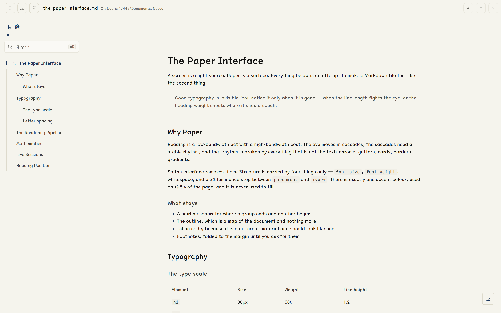
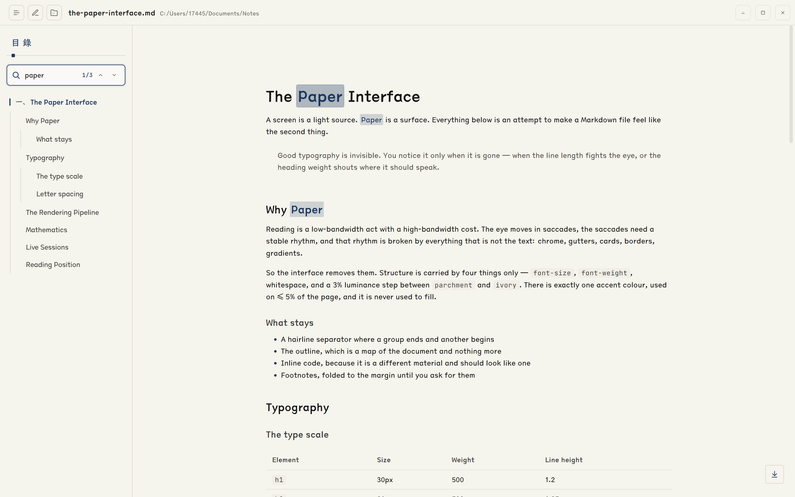
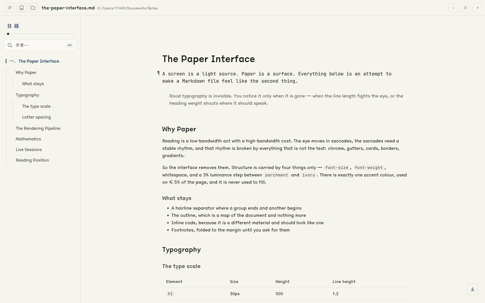
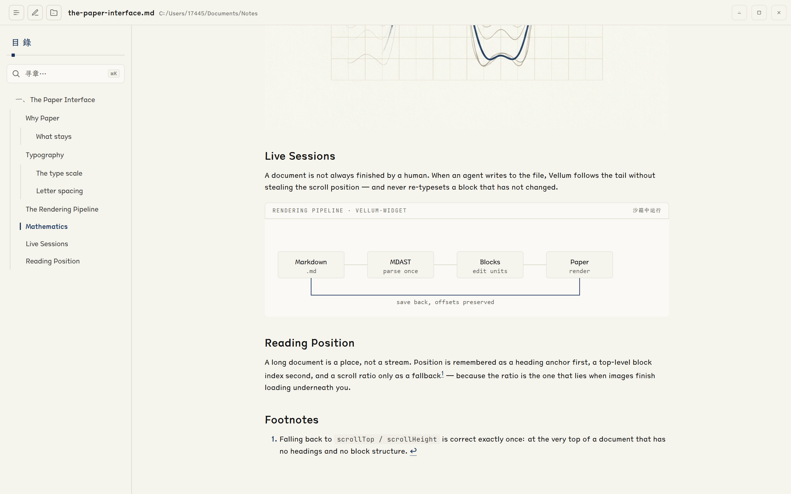

Vellum
素笺给 Markdown 一张纸。
暖纸底色、今楷正文、一笔靛青。没有行号栏，没有分屏，没有侧边工具架—— 只有一个把长文档认真排出来的窗口，和一份愿意被读完的心情。
中文 / 英文两版同一条时间线：中文字幕配中文文档界面，英文版配英文文档界面。 默认静音自动循环（浏览器自动播放的要求），点右上角开声音；滚出视野自动暂停。
排版不是装饰，是把眼睛留下来
正文列宽、行距、字距都是从纸版心推出来的：14px / 1.55 行高 / 0.4px 字距， 中文的舒展来自字距而不是字号。层级只靠字号、字重、留白与 ivory 填充承担—— 标题没有前导短线，引用没有侧线，表格默认没有斑马纹。
该渲染的一件都不少：GitHub Flavored Markdown 的表格、任务列表与脚注， KaTeX 行内与行间公式（连 $5 和 $10 这种货币陷阱也做了保护）， 以及 20 种常用语言的代码高亮。代码块是纸上浮起的一小块象牙白， 没有边框、没有彩色表头。
图、GIF、相对路径的本地图片按文档位置解析；raw HTML 放行常见排版标签后再净化。 眼睛停在正文上，是因为别处没有东西抢它。

阅读视图 · 今楷正文 / 发丝线分层 / 大纲跟随
长文档需要一张地图
左侧大纲把 h1–h3 收成一张目录，随正文滚动实时高亮当前章节，点一处就缓动滚过去。 Ctrl+K 聚焦全文检索，匹配项在正文里就地标出来， 上一个 / 下一个逐个跳。
侧栏宽度能在 200–320px 之间拖，双击手柄复位； 窄屏自动收成浮层。开关侧栏会改正文宽度、整篇重排—— 应用会先用视口锚点钉住你正在看的那一行再换版，所以页面不会“闪到别处”。
关掉窗口再打开，位置还在：阅读位置按标题锚点 → 顶层块序号 → 比例兜底三级记录， 并在图片与字体把版面撑开时持续重锚，而不是拿旧比例乘新高度。

大纲 + 全文检索 · Ctrl K · 匹配项就地高亮
就地编辑，不离开这一页
Ctrl+E 进入编辑视图，点任意可编辑块直接改—— 不动版式，不切分屏，不改字体：源码覆盖层与渲染态同字号同行高， 草稿变长就自增高把下文推下去。
编辑信号全部放在块左页边：hover 浮出淡 ¶，只读块（原生 HTML 与交互块）常驻灰 ×， 正在编辑的块由一道靛青边轨与页边的 ¶ 标记。正文本身保持阅读时的样子。
Ctrl+S 或失焦自动提交：临时文件 + 原子重命名写回磁盘， 编辑期间文件被外部改动也能识别回声、不误判、不覆盖。

块级就地编辑 · 页边 ¶ · 提交即落盘
当文档由 agent 写
文档不总是由人写完的。vellum-mdlog 连接建立后，agent 每写一段，
文档尾部就多一段——不抢你的滚动位置，不重打没有变化的块，
木已成舟的部分不闪一下再出现。
文档里的 vellum-widget 代码块会被渲染成沙箱交互块：实时曲线、图表、可点的小界面，
都在跨源 iframe 里跑。为了不让一篇长文档把内存吃光，全局最多保留 10 个存活窗口，
离屏的休眠、滑回来自动恢复，停帧的块不占 CPU。
交互块默认停在一个占位块上——点过一次 [点击加载]，这一份内容就被记住（按源码指纹落盘）， 换文档、热重载、重启应用都不用再点第二次。

沙箱交互块 · 跨源 iframe · 最多 10 个存活
还剩下的那些小事
无框原生窗口
自己画的顶栏，方形窗口控制件，整栏可拖拽；关窗走的是平台惯例，不是网页。
6px 自定义滚动条
隐藏原生滚动条，平时透明，滚动时淡入；光标靠近右缘也会浮现。
一键跳到底部
距底超过 300px 时右下角浮现一枚浮钮，点它缓动到底，任何滚动输入都能打断。
多实例
双击几个 .md 就开几个窗口，各自加载各自的文档；阅读位置按文件路径键控，互不干扰。
文件关联
安装时自动接管 .md 与 .markdown，资源管理器里双击即开。
文档内锚点
[文字](#id) 由应用接管：缓动滚过去、顺带点亮大纲，不再改写 URL 与历史。
本地优先
没有云、没有账号、不联网。打开的是磁盘上的那个文件，写回的也是它。
折叠脚注
脚注定义折在页边，点到才展开；定义块本身也是可下钻的容器。
它由什么构成
| 平台 | Windows 10 版本 1809+ / Windows 11 · 64 位（x64） |
|---|---|
| 运行时 | WebView2（现代 Windows 多数已预装） |
| 体积 | 约 7 MB 安装包，冷启动即读，不驻留后台 |
| 许可 | MIT · 免费开源 · 离线可用 |
| 技术栈 | Tauri 2（Rust 后端）+ React 19 + Vite 8 + TypeScript |
| 字体 | 仓耳今楷 TsangerJinKai02（阅读）· JetBrains Mono（代码与计数） |
| 设计语言 | 纸墨书斋 kami 风格：暖纸底色、墨色文字、单一靛青点缀，见仓库 DESIGN.md |
下载 · 安装 · 双击一个 .md
两种安装包都会注册 .md / .markdown 文件关联。